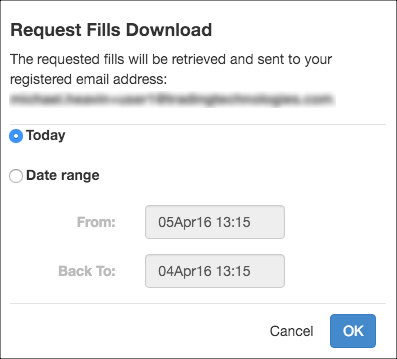

You can download a list of fills for the current day or for a date range so you can integrate fills with other back office or risk management systems. The .csv file is automatically sent to the email address associated with the user in the Setup application.
Note: Fill downloads are supported only in Detail and Continuous modes.
To request a fill download, select Request download from the Fills widget context menu and specify whether you want to download the fills from the current day or from a specific range of dates.
